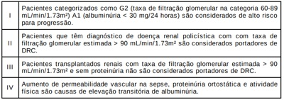
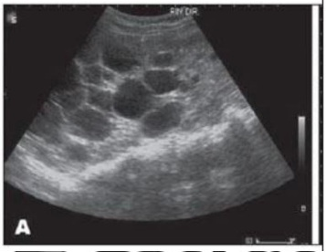
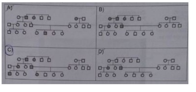

Questão 1 · Def inição · Métodos de avaliação da f iltração glomerular · 4000188296A dosagem da cistatina C está associada ao estudo da:
A Função renal
B Função pancreática
C Função cardíaca
D Capacidade respiratória
E Lesão muscular
Questão 2 · Classif icação · Filtração glomerular · Doença Renal Crônica · 4000186776Paciente comparece em consulta ambulatorial com história de HAS e DM 2 com tratamente inadequado há pelo menos 10 anos. Apresenta exame laboratorial com creatinina 2,8 mg/dl (normal até 1,2). Sobre a classificação da doença renal crônica (DRC) pelo Kidney Disease Improving Global Outcomes (KDIGO) assinale a alternativa CORRETA:
A Uma taxa de filtração glomerular entre 45 e 59ml/min classifica a DRC como estágio 2. A presença de albuminúria confere agravo de risco de progressão em todos os estágios da DRC.
B Uma taxa de filtração glomerular entre 30 e 44 ml/min classifica a DRC como estágio 3A. A presença de albuminúria confere agravo de risco de progressão em todos os estágios da DRC.
C Uma taxa de filtração glomerular entre 45 e 59 ml/min classifica a DRC como estágio 4. A presença de albuminúria confere agravo de risco de progressão em todos os estágios da DRC.
D Uma taxa de filtração glomerular entre 30 e 44 ml/min classifica a DRC como estágio 3B. A presença de albuminúria confere agravo de risco de progressão em todos os estágios da DRC.
E Uma taxa de filtração glomerular entre 15 e 29ml/min classifica a DRC como estágio 5. A presença de albuminúria confere agravo de risco de progressão em todos os estágios da DRC.
Questão 3 · Indicações de Terapia renal substitutiva · 4000186595Considerando a classificação de Doença Renal Crônica, que leva em consideração a taxa de ltração glomerular, microalbuminúria e causa, em qual estágio o paciente apresenta pior prognóstico de evoluir para necessitar de terapia renal substitutiva, como diálise ou transplante renal?
A G3a A3.
B G3b A1.
C G2 A3.
D G3a A2.
Questão 4 · Nef rologia · 4000185461Paciente de dois anos de idade foi admitido na Unidade de internação de pediatria para investigação de doença renal crônica, ainda sem etiologia definida. Criança veio encaminhada do interior do estado, após constatação de disfunção renal persistente após um episódio de gastroenterite aguda autolimitado. Na última avaliação laboratorial, o ritmo de ltração glomerular do paciente era 40mL/min/1,73m². Assinale a alternativa abaixo que apresenta as PRINCIPAIS ALTERAÇÕES LABORATORIAIS esperadas para esse paciente:
A Anemia microcítica e hipocrômica, acidose metabólica, hipercalemia, hiperfosfatemia e hipercalcemia
B Anemia microcítica e hipocrômica, alcalose metabólica, hipercalemia, hiperfosfatemia e hipercalcemia
C Anemia normocítica e normocrômica, acidose metabólica, hipercalemia, hiperfosfatemia e hipocalcemia
D Anemia normocítica e normocrômica, alcalose metabólica, hipercalemia, hiperfosfatemia e hipocalcemia
Questão 5 · Nef rologia · 4000184523Considerando que a hipertensão arterial sistêmica pode levar à insu ciência renal crônica, assinale a alternativa que apresenta o principal mecanismo responsável por esse processo.
A esclerose glomerular
B fibrose intersticial
C isquemia
D hipertensão glomerular
E hiperfiltração glomerular
Questão 6 · Nef rologia · 4000184522Acerca do uso de
A A creatinina é uma toxina presente no sangue decorrente do metabolismo muscular e de eliminação renal. O acúmulo dessa substância representa um risco à saúde do paciente, sendo indicada diálise de urgência, caso seja detectado.
B O uso do
C Trata-se da melhor opção para estimar o clearance renal, uma vez que sua depuração no organismo é 100% renal.
D A dosagem de creatina urinária é o padrão-ouro para a estimativa de filtração glomerular.
E Trata-se de uma boa opção, uma vez que a mensuração do
Questão 7 · Nef rologia · 4000183896A doença renal crônica (DRC) é um importante problema médico e de saúde pública. O rastreio e diagnóstico adequados são fundamentais para prevenir a doença renal terminal e suas complicações. Sobre o diagnóstico da DRC, considere as afirmações abaixo. Das afirmações, estão corretas

A II e III.
B II e IV.
C I e IV.
D I e III.
Questão 8 · Classif icação · Nef rologia · 4000181773Um paciente com taxa de ltração glomerular estimada de 17ml/min há mais de três meses tem doença renal crônica em estágio
A IIIA.
B IIIB.
C IV.
D V.
Questão 9 · Manejo da Nef ropatia diabética · 4000175563Leia o caso clínico a seguir. Homem de 65 anos, com diabetes tipo 2 há quinze anos, hipertenso há dezesseis anos, evolui com creatinina 1,5 mg/dL há seis meses e agora 1,6 mg/dL. Apresenta polineuropatia e retinopatia diabética, mas sem microalbuminúria. Ultrassonogra a mostrou rins de tamanho normal e boa diferenciação corticomedular e próstata normal. Doppler de artérias renais normal, com índice de resistência em artérias arqueadas normal. As glicemias estão controladas, com HbA1c de 5,9 %, em uso de insulinas. Exame de urina tipo 1 normal. Nega uso de anti-inflamatórios não hormonais. Pressão arterial sistêmica bem controlada, com uso de losartana. Hidratado e sem edemas. Nesse caso, qual deve ser a consideração diagnóstica?
A O diagnóstico é nefropatia diabética, pois o paciente não apresenta microalbuminúria e os rins são de tamanho normal.
B O diagnóstico é nefrosclerose hipertensiva, pois os rins são de tamanho normal.
C No diagnóstico a ausência de microalbuminúria não afasta nefropatia diabética.
D O uso de bloqueador do receptor 1 da angiotensina 2 afasta a possibilidade de ser nefropatia diabética.
Questão 10 · Etiologia Glomerulonef rite crônica · Etiologia Diabetes mellitus DM · 4000175152Etiologia da Doença Renal Crônica DRC Sobre as causas de Doença renal crônica (DRC), podemos afirmar:
A No paciente com Diabetes Melito o quadro clínico se inicia com microalbuminúria e hipertensão, com aumento gradual da albuminúria e redução progressiva da filtração glomerular.
B Nas glomerulonefrites o exame de urina não contribui para o diagnóstico.
C A hipertrofia prostática benigna não é causa de DRC.
D A síndrome hepatorrenal pode ser pensada exceto quando há evidência de cirrose com hipertensão portal.
E Nenhuma das alternativas anteriores.
Questão 11 · Def inição · Nef rologia · 4000169376Uma mulher de 56 anos de idade, diabética, obesa, em tratamento irregular com hipoglicemiante oral, apresenta hipertensão arterial de difícil controle. Seus últimos exames de rotina mostraram glicemia de 165 mg/dl, ureia de 55 mg/dl e creatinina de 1,3 mg/dl. Com base nesse caso hipotético, é correto a rmar que, para avaliar a presença de nefropatia ainda incipiente, deve-se realizar
A microalbuminúria e taxa de filtração glomerular.
B tomografia renal com contraste e cetonúria.
C relação creatinina/glicose no plasma e na urina.
D clearance
E ultrassonografia renal e atividade plasmática da renina.
Questão 12 · Etiologia Hipertensão arterial HAS · Etiologia Glomerulonef rite crônica · 4000166461Etiologia Diabetes mellitus DM As 3 principais causas de Doença Renal Crônica no Brasil são:
A Diabetes Mellitus, Insuficiência Renal Aguda e Glomerulopatias.
B Hipertensão Arterial, Diabetes Mellitus e Litíase Renal
C Diabetes Mellitus, Hipertensão Arterial e Doença Real Policística
D Hipertensão Arterial, Diabetes Mellitus e Glomerulopatias
Questão 13 · Def inição · Nef rologia · 4000164300Homem, 65 anos, hipertenso há 30 anos, refere poliúria, sem outras queixas. Monitorização Ambulatorial da Pressão Arterial com valor médio de PA = 170 x 100 mmHg, em uso de anlodipina, carvedilol e furosemida. Exame físico sem alterações. Ultra-sonogra a: rins de dimensões reduzidas, 7,5 cm na maior dimensão bilateralmente, com perda da diferenciação entre córtex e medula. Considerando o diagnóstico sindrômico renal, quais parâmetros são utilizados para o estadiamento?
A Creatinina plasmática e urina rotina.
B Relação ureia/creatinina plasmática e fração de excreção de sódio.
C Proteinúria de 24hs e clearance de creatinina.
D Taxa de filtração glomerular e relação albumina/creatinina urinária.
Questão 14 · Nef ropatia diabética x Nef ropatia não diabética · 4000163670Mulher, 24 anos, diagnóstico de diabetes mellitus tipo 1 aos 10 anos, em uso de insulina e losartana 50 mg/dia, e diagnóstico de lúpus eritematoso sistêmico aos 20 anos, em uso de hidroxicloroquina 400 mg/dia, prednisona 5 mg/dia, e vitamina D3 1000UI/dia, relata há 4 meses apresentar turvação visual, fadiga, dispneia aos médios esforços e ganho de peso. Ao exame: anasarca e PA 150 x 80 mmHg. Exames complementares: hemograma, PCR, TGO, TGP, TP: normais; VHS 28 mm/h (VR 20 mm na 1 hora); Cr 1.5 mg/dl (VR 1,2 mg/dl); Ur 60 mg/dl (VR 15-45 mg/dl); albumina 3.0 mg/dl (VR 3.5-4mg/dl); Hb Glicada 6.6%; Colesterol total 250mg/dl (VR < 200mg/dl), LDL 140mg/dl (VR< 100 mg/dl); Triglicerídeos 300 (VR< 150 mg/dl); SU: proteína 4+; proteinúria em 24h: 4g/24h; fator antinúcleo reagente 1:160 padrão pontilhado no denso. Sorologias HIV, anti- HBsAg, anti-HCV e VDRL: negativas. Que alteração na investigação complementar confirmaria o diagnóstico mais provável?
A Dosagem sérica elevada de CH50, C3 e C4.
B Nódulos de Kimmelstiel-Wilson na biópsia renal.
C Depósitos imunes subendoteliais focais glomerulares na biópsia renal.
D Anticorpo anticitoplasma de neutrófilos reagente no padrão citoplasmático.
Questão 15 · Etiologia Hipertensão arterial HAS · 4000129220Em pacientes com doença renal em estágio nal, que anormalidade, dentre as abaixo, é a responsável pela hipertensão arterial observada?
A Nefroesclerose
B Expansão de volume vascular
C Hiperaldosteronismo secundário
D Hiperparatireoidismo
Questão 16 · Nef ropatia diabética x Nef ropatia não diabética · 4000082122Paciente do sexo masculino, 18 anos, recebeu diagnóstico de Diabetes Mellitus do tipo 1, após quadro de cetoacidose diabética, diagnosticada há 2 anos. Apresenta um quadro de anasarca de início insidioso há 3 meses. Refere início de edema em membros inferiores e face, com ganho de peso de aproximadamente 7 kg no período. Vem em tratamento regular com insulinoterapia e nega uso prévio de inibidores da enzima conversora da angiotensina, anti-inflamatórios ou hipolipemiantes. Os exames apresentados revelaram: Hb = 12,3g/dL leucócitos 6320 plaquetas 290.000. Creatinina = 0,6; Ureia = 67; Na = 131 ; K = 4,5; Albumina = 2,1; Colesterol total = 290 ; LDL = 178; TGL = 190. Glicemia de jejum = 115 ; Hemoglobina glicada = 7,0%. EAS: proteínas 4+, presença de corpúsculos ovais graxos, ausência de hematúria. A respeito do quadro apresentado, justifica-se
A repetir o sumário de urina e proceder biópsia renal apenas se identificada hematúria glomerular.
B realizar mapeamento da retina para diagnóstico associado de retinopatia e nefropatia diabética.
C realizar biópsia de rim para diagnóstico de glomerulopatia não relacionada ao diabetes.
D solicitar pesquisa de complementos séricos e proceder biópsia de rim se resultados estiverem baixos.
Questão 17 · Exames laboratoriais · 4000080475Uma mulher de 63 anos de idade foi encaminhada ao nefrologista por apresentar uma dosagem sérica de creatinina de 3,4 mg/dl durante realização de exame preventivo de câncer ginecológico. Negava qualquer queixa urinária, bem como história prévia de doença renal. Havia 2 anos que vinha em acompanhamento para hipertensão arterial sistêmica e diabetes melitus, fazendo dieta hipossódica e usando enalapril, sinvastatina e clortalidona. Não tinha resultados prévios de escórias ou quaisquer exames de imagem. O exame físico foi completamente normal. Peso: 54,4 kg. Em se tratando de doença renal crônica, quais complicações devem ser investigadas nesse grupo vulnerável?
A Hipertireoidismo, hipoalbuminemia e hipocortisolismo.
B Anemia, hiperparatireoidismo e hipercalemia.
C Alcalose metabólica, hipercalcemia e hipomagnesemia.
D Hipernatremia, distúrbios de coagulação e deficiência de vitamina D.
Questão 18 · Fórmula Cockrof tGault · 4000075477Diversos medicamentos precisam ter sua dose ajustada de acordo com a função renal do paciente, para isso a fórmula utilizada costuma ser a de Cockroft-Gault. Calcule o Clearance de Creatinina estimado de uma mulher com 60 anos e 72 kg, que apresenta uma creatinina sérica de 1,6.
A 50ml/min
B 62,5 ml/min
C 30 ml/min
D 47,5 ml/min
E 42,5 ml/min
Questão 19 · Exames laboratoriais · 4000024136Na evolução da doença renal crônica, qual achado é observado mais precocemente?
A Anemia.
B Hiperfosfatemia.
C Uremia.
D Acidose metabólica.
Questão 20 · Exames de imagem · 4000018285O encontro de rins diminuídos à ultrassonografia, num paciente com insuficiência renal, sugere, dentre os abaixo:
A Mieloma múltiplo
B Diabetes mellitus
C Nefroesclerose maligna
D Amiloidose
E Doença policística
Questão 21 · Filtração glomerular · 4000006341Na avaliação da Taxa de Filtração Glomerular (TFG) assinale a alternativa CORRETA:
A São marcadores endógenos para avaliar TFG: inulina e iotolamato.
B Na avaliação da TFG considera-se a proteinúria, dieta, idade, peso, sexo.
C A TFG corresponde à soma da filtração glomerular de todos os néfrons.
D São equações que estimam a TFG: RIFLE e AKIN.
Questão 22 · Etiologia Hipertensão arterial HAS · 4000002923O principal mecanismo que leva à perda de função renal na hipertensão arterial é:
A Hiperfiltração glomerular.
B Hipertensão glomerular.
C Isquemia.
D Fibrose intersticial.
E Esclerose glomerular.
Questão 23 · Etiologia Doença Renal Policística · 4000001206Considere a imagem e responda a correta

A Caso o paciente apresente uma creatinina de 2,5 mg/dL deve se tratar de um caso de Insuficiência Renal Aguda obstrutiva
B Há uma grande chance de encontrarmos familiares acometidos pela mesma patologia
C A hematúria macroscópica é uma complicação que acomete mais de 80% dos pacientes portadores dessa patologia
D O surgimento de neoplasias renais nesses pacientes é um achado que supera os 50%
E É consenso que o uso de inibidores de SGLT2 são medicamentos úteis nessa patologia
Questão 24 · Etiologia Diabetes mellitus DM · 4000125571Marque a alternativa CORRETA quanto a nefropatia diabética.
A O nível atual da glicemia (se descontrolada) confirma o diagnósticos de nefropatia diabética, nos casos de pacientes diabéticos com creatinina elevada.
B Glomeruloesclerose difusa é manifestação histológica mais comum.
C Na fase de macroalbuminúria a doença ainda é reversível.
D A hiperglicemia causa vasoconstrição da artéria renal e com consequente comprometimento da filtração glomerular.
E O primeiro achado laboratorial sugestivo de nefropatia diabética é a proteinúria> 500mg/dia.
Questão 25 · Etiologia da Doença Renal Crônica DRC · 4000096852Homem, 46a, refere cefaleia frequente, há 9 meses, concomitante ao diagnóstico de hipertensão arterial sistêmica, em uso de enalapril, espironolactona e furosemida. Antecedentes familiares: pais hipertensos. Exame físico: PA = 210 X 130 mmHg; creatinina= 4,9 mg/dl; ureia = 132 mg/dl; sódio = 136 mEq/L; potássio = 3,7 mEq/L; exame sumário de urina: densidade = 1.020; pH= 6,0; leucócitos = 2/campo; hemácias = 2/campo; proteinúria = 0,6 g/24horas. ECG= sobrecarga ventricular esquerda. O DIAGNÓSTICO HISTOPATOLÓGICO ESPERADO É:
A Nefroesclerose benigna.
B Glomerulonefrite crônica.
C Nefrite intersticial.
D Glomeruloesclerose focal e segmentar.
Questão 26 · Cirurgia · Etiologia Doença Renal Policística · 4000053898Paciente feminina 49 anos, refere dispneia há 36 horas, com ausculta pulmonar limpa, hálito urêmico e tremores de extremidades. Emagrecida, apresenta à palpação abdominal massas mais bem evidenciadas em andar médio e ancos, bilateralmente. Gasometria apresenta acidose metabólica parcialmente compensada, com hipercalemia 6,9 mEq/L. Creatinina elevada (9,3 mg/dl). Na família, uma irmã é transplantada de rim e uma prima faz diálise. Qual seu diagnóstico para a paciente?
A Tumor de ovários avançado com insuficiência renal pós-renal.
B Síndrome Fanconi.
C Rins policísticos.
D Tumor de supra-renal.
E Mieloma múltiplo.
Questão 27 · Etiologia Diabetes mellitus DM · 4000028490Exame de maior sensibilidade para detecção de nefropatia diabética:
A Clearence de creatinina
B Creatinina sérica
C Albumina urinária
D Ultrassonografia
E Teste de intolerância a glicose
Questão 28 · Classif icação · 4000024881Um paciente com nefropatia diabética apresenta clearance de creatinina de 16 ml/min. Ele tem insu ciência renal crônica estágio:
A 2.
B 3a.
C 3b.
D 4.
Questão 29 · Fatores que inf luenciam a ureia e creatinina · 4000013304Determinado paciente de 32 anos de idade, advogado, refere que iniciou a prática de treinamento resistido com enfoque em hipertro a muscular há cerca de 10 anos, assim como corrida de 30 minutos cinco vezes por semana, associados ao uso de suplementação nutricional de whey protein (30 g/dia) e creatina (5 g/dia). O paciente possui 1,70 m de altura e 95 kg de peso corporal. A medida da circunferência abdominal é de 85 cm. A frequência cardíaca é de 62 bpm, a frequência respiratória é de 16 irpm e a saturação de oxigênio equivale a 98%. Apresenta exames laboratoriais solicitados por outro médico, por "rotina", com os seguintes valores de referência (VR) do laboratório de realização: creatinina de 1,4 mg/dL (VR: 0,7-1,3); ureia de 45 mg/dL (VR: 10-40); creatinofosfoquinase de 500 U/L (VR: 22-344); e exame sumário de urina (ESU, EQU, urina tipo I, urinanálise) sem alterações. Relata um consumo proteíco de cerca de 200 g por dia, na forma de cerca de 1 kg de peito de frango. C om base nos dados apresentados nesse caso clínico acima e nos conhecimentos médicos correlatos, julgue o item a seguir. Em razão do nível de creatinina e ureia séricas, é correto afirmar que esse indivíduo apresenta uma doença renal incipiente.
A Certo.
B Errado.
Questão 30 · Etiologia Diabetes mellitus DM · 4000121720A nefropatia diabética é causa importante de doença renal crônica no meio médico e, portanto, o entendimento da fisiopatologia da glomeruloesclerose diabética é fundamental. Em relação a esse assunto, assinale a alternativa CORRETA.
A O rastreamento da lesão renal diabética incipiente é reconhecida por albuminúria em amostra isolada de urina.
B A nefropatia inicia-se com hiperfiltração e hipotrofia glomerular, fase marcada por proteinúria subnefrótica.
C São achados de glomeruloesclerose diabética avançada: hematúria e doença renal crônica terminal.
D A proteinúria nefrótica não é manifestação encontrada na nefropatia diabética.
E O ultrassom de rins e vias urinárias da nefropatia diabética classicamente demonstra rins de tamanho reduzido.
Questão 31 · Exames de imagem · 4000055322A alteração renal que está associada a um quadro clínico de hipertro a prostática em um homem de 85 anos com di culdade miccional e que apresenta os seguintes achados laboratoriais: Sódio 139 mmol/L, potássio 4,0 mmol/L, cloreto 104 mmol/L, CO2 25 mmol/L, creatinina 1,9 mg/dL e glicose 81 mg/dL é:
A Atrofia cortical
B Glomerulonefrite rapidamente progressiva
C Carcinoma de célula renais
D Necrose papilar
E Rim policistico
Questão 32 · Classif icação · 4000036329Homem de 60 anos, branco, DM2 há 20 anos, com HAS há 15 anos, sem edema, em uso de losartana 100 mg/dia, gliclazida 60 mg/dia, atorvastatina 10 mg/dia vem a consulta para avaliar função renal. Traz dosagem de creatinina de 1,9 mg/dL e TFG estimada (CKD-EPI) de 31 mL/min/1,73 m². Relação Albumina / Creatinina de 350 mg/g de creatinina. Aponte o estadiamento correto do paciente de acordo com o TFG e a albuminúria.
A G3a/A2.
B G3b/A3.
C G4/A3.
D G3b/A1.
Questão 33 · Etiologia Diabetes mellitus DM · 4000001781Dentro dos conceitos de doença renal do diabetes (DRD) , a base nos valores crescentes de excreção urinária de albumina (EUA), a DRD tem sido historicamente classificada em fases. Entretanto, a progressão destes estágios não é inexorável, podendo ocorrer regressão da microalbuminúria em cerca de 30% dos pacientes, em geral associada a intervenções terapêuticas. Aponte a alternativa que NÃO faz parte dessas fases.
A Normoalbuminúria.
B Hipoalbuminúria.
C Microalbuminúria.
D Macroalbuminúria.
Questão 34 · Etiologia Diabetes mellitus DM · 4000001715Embora a taxa de complicações crônicas relacionadas ao DM venham diminuindo nas últimas duas décadas, ainda é muito grande o número de pacientes afetados, pois a incidência de DM continua aumentando. Por este motivo, a Doença Renal do Diabetes (DRD) permanece sendo a principal causa de doença renal crônica em pacientes ao ingressarem em programas de diálise, inclusive no Brasil. A DRD está associada ao aumento de mortalidade, principalmente relacionada à doença cardiovascular. Em referência à enorme importância do adequado conhecimento de alterações achadas devido à sua evolução, indique a opção considerada INADEQUADA.
A A diminuição rápida e acentuada da taxa de filtração glomerular (> 80%) após o início de terapia com Inibidores da Enzima Conversora da Angiotensina (IECA) ou Bloqueadores do Receptor AT1 da Angiotensina (BRA)sugere estenose da artéria renal, devendo esta possibilidade ser avaliada, especialmente em pacientes com vasculopatia.
B Todo teste de albuminúria anormal deve ser confirmado em duas de três amostras coletadas em um intervalo de 3 a 6 meses, devido à variabilidade diária da excreção urinária de albumina (EUA).
C Embora seja sugerido que infecção urinária possa interferir nos valores de EU A, recentemente foi constatado que a existência de bacteriúria não interfere de maneira apreciável nas medidas de albuminúria.
D Fatores como exercício durante o período de coleta de urina, febre, insuficiência cardíaca, hiperglicemia grave e hipertensão arterial não controlada podem elevar os valores de Excreção Urinária de Albumina (EUA).
Questão 35 · Manejo da Nef ropatia diabética · 4000125188Paciente do sexo masculino, 65 anos de idade, com antecedente de diabetes mellitus e hipertensão arterial sistêmica por mais de 15 anos, além de obesidade (peso de 85 kg e altura de 1,62 m) e dislipidemia, em tratamento médico irregular, sem controle clínico adequado, encaminhado para o ambulatório de nefrologia para acompanhamento, devido à elevação das escórias nitrogenadas e edema corporal. Após a avaliação inicial, foi constatado, por meio de exames laboratoriais: creatinina = 3,0 mg/dl; ureia = 90 mg/dl; colesterol total = 280 mg/dl; HDL = 35 mg/dl; triglicérides = 235 mg/dl; ácido úrico = 8,5 mg/dl; glicemia = 210 mg/dl; glicemia pós-prandial = 250 mg/dl; cálcio = 8,0 mg; fósforo = 6,0 mg; Hb = 10,5 g/dl; Ht = 32,5%; potássio = 5,0 mEq/L; US com rins de tamanho, forma e ecogenicidade dentro do normal, com espessura corticomedular pouco reduzida. Fundo de olho com retinopatia proliferativa grau II. Com base nesses exames, o paciente foi considerado como portador de nefropatia crônica secundária à nefropatia diabética e hipertensiva. Sobre a insu ciência renal crônica, pode-se afirmar que:
A O melhor parâmetro para o diagnóstico é a creatinina sérica.
B Todo nefropata crônico tem sempre rins de dimensões diminuídas.
C Os controles pressórico e glicêmico inadequados podem influenciar de forma negativaa progressão da nefropatia crônica.
D As infecções são a principal causa de mortalidade em casos de nefropatia crônica.
E A anemia não é frequentemente observada nesse grupo de pacientes.
Questão 36 · Def inição · 4000097395Um homem branco de 75 anos de idade compareceu ao consultório para avaliação médica de rotina. Tem história de hipertensão arterial e faz uso regular de diurético tiazídico. Antecedente de colecistectomia aos 35 anos. Ao exame físico encontrava-se com pressão arterial de 130x80mmHg, sem outros dados relevantes. Trouxe exame sumário de urina que se revelou normal e uma determinação do clearance de creatinina em urina de 24 horas de 55mL/min/1,73m2 (creatinina sérica = 1,4mg/dl) feitos na semana anterior. Responda o item verdadeiro:
A Este paciente possui doença renal crônica no estágio 3A.
B Este paciente não tem doença renal crônica já que a creatinina sérica e a taxa de filtração glomerular estão normais para a sua faixa etária.
C A definição se este paciente possui doença renal crônica depende dos níveis séricos de ureia que apresentar.
D Um maior período de observação é necessário para determinar se este paciente tem ou não doença renal crônica.
Questão 37 · Etiologia da Doença Renal Crônica DRC · 4000097291A Doença Renal Crônica (DRC) em seu estágio inicial, normalmente, é assintomática. O diagnóstico é muitas vezes feito por exames de rastreamento. Apesar destes componentes, o quadro clínico e alguns exames complementares podem apontar a causa da doença. A alternativa CORRETA é:
A No diabete Melito, o quadro clínico, em geral, se inicia com microalbuminúria e hipertensão, com aumento gradual da albuminúria e redução progressiva da filtração glomerular.
B Na hipertensão arterial sistêmica, em geral, a DR C é caracterizada por níveis pressóricos persistentemente elevados por um longo período de tempo, mas alguns pacientes com níveis pressóricos pouco elevados podem evoluir para quadros avançados de DRC e frequentemente apresentam lesões em outros órgãos-alvo. Diferentemente da causa diabética, não evoluem com micro ou macroalbuminúria.
C A glomerulonefrite é uma categoria ampla de doenças, incluindo síndrome nefrítica, síndrome nefrótica, vasculites. O exame de urina geralmente não é sugestivo.
D As alternativas A e B estão corretas.
E Todas as alternativas estão corretas.
Questão 38 · Etiologia Diabetes mellitus DM · 4000086439As primeiras manifestações clinicolaboratoriais da nefropatia diabética incluem:
A Hiperfiltração glomerular e microalbuminúria.
B Hematúria microscópica e leucocitúria.
C Macroalbuminúria e doença renal crônica.
D Nefrite intersticial crônica e hipertensão.
E Hipoaldosteronismo hiporreninêmico e acidose tubular renal.
Questão 39 · Etiologia Doença Renal Policística · 4000066923Durante uma consulta de rotina, um paciente nefropata recebeu a recomendação de que fosse investigada a possibilidade de ter aneurisma intracraniano, devido ao relato de falecimento por hemorragia subaracnóidea de dois familiares de primeiro grau, também nefropatas. A provável doença renal desse paciente é:
A Doença de Alport.
B Doença de Berger.
C Doença renal policística.
D Síndrome de Goodpasture.
Questão 40 · Nef rologia · 4000060756Assinale a afirmação INCORRETA.
A A etiologia da doença renal crônica (DR C) na criança é semelhante à encontrada no adulto.
B A etiologia da DRC na criança apresenta predominância de anomalias congênitas renais e geniturinárias.
C A distribuição etiológica da DRC varia com a idade, sendo as uropatias mais frequentes como causa de DRC em pacientes mais jovens e as glomerulopatias, em crianças com mais de 12 anos de idade.
D A presença de alteração na urinálise, de caráter persistente, em pré-escolar, durante pelo menos 3 meses pode ser considerada doença renal crônica.
E A DRC em estágio 1 é caracterizada por dano renal com ritmo de filtração glomerular (RFG) normal ou aumentado.
Questão 41 · Classif icação · 4000025326Com relação a doença renal crônica (IRC) é correto afirmar:
A A IRC fase 2 corresponde a lesão renal com redução moderada no ritmo de filtração glomerular (clearence de creatinina entre 15 - 29).
B A IRC fase 3 corresponde a lesão renal com redução moderada no ritmo de filtração glomerular (clearence de creatinina entre 30 - 59).
C A principal causa de óbito em pacientes dialíticos é infecciosa.
D As alterações histopatológicas encontradas em biópsia renal de um paciente com IR C independem da doença de base.
E A IRC é uma doença reversível.
Questão 42 · Exames de imagem · Complicações da DRC Síndrome urêmica · 4000125274Complicações da DRC Doença Mineral e óssea Sobre Insuficiência Renal Crônica (IRC), é INCORRETO afirmar:
A Há hiperparatireoidismo secundário, com hipocalcemia, hiperfosfatemia e níveis deparatôrmonio elevado.
B Uremia, hipervolemia, acidose metabólica e distúrbio eletrolítico são indicações dediálise.
C A dosagem de ureia e creatinina é o marcador diagnóstico e o método diagnósticomais específico para IRC.
D Os rins, habitualmente, apresentam redução do seu tamanho ao ultrassom renal.
E Na fase de disfunção renal, é comum a poliúria por hiperosmolaridade.
Questão 43 · Epidemiologia · 4000118119Qual doença de base predominante em pacientes em terapia renal substitutiva no Brasil ?
A Diabetes mellitus.
B Hipertensão arterial.
C Glomerulonefrite.
D Pielonefrite.
E Rins policísticos.
Questão 44 · Def inição · 4000113205Conforme as recomendações do KDOQI para o diagnóstico e estadiamento da doença renal crônica, analise os seguintes casos e assinale a alternativa que contém apenas os pacientes nos quais se pode a rmar que há critérios diagnósticos para doença renal crônica (considere todas as alterações laboratoriais ou de imagem confirmadas em uma segunda amostra ou em novo exame laboratorial): I- Homem, 54 anos, com quatro cistos em rim direito e três em rim esquerdo, medindo em média 30 mm, vistos através de ultrassonografia abdominal. Albuminúria de 24 horas = 10 mg. Taxa de filtração glomerular de 100 ml/min/1,73 m²; II- Mulher, 69 anos, diabética de longa data, com microalbuminúria de 24 horas = 50 mg; TFG de 70 ml/min/1,73 m². USG renal sem alterações; III- Homem, 45 anos, hipertenso, com albuminúria de 10 mg em 24 horas, TFG de 54 ml/min/1,73 m², USG renal sem alterações.
A I, II e III.
B I e II.
C I e III.
D II e III.
E I.
Questão 45 · Métodos de avaliação da f iltração glomerular · 4000111380Maricota, 80 anos, hipertensa há 30 anos, diabética há 20 anos, vem encaminhada da Unidade Básica de Saúde (UBS) para iniciar tratamento dialítico. Traz taxa de ltração glomerular (TFG) calculada pela fórmula de Cockroft Gault de 11,8 ml/min. Peso 55 kg, altura 1,50 m. Exames adicionais: creatinina sérica de 3,3 mg/dl, ultrassonogra a com rins de 10 cm bilateralmente. Em relação à estimativa da TFG, pode-se dizer que:
A O cálculo pela fórmula de Cockroft Gault é o indicado para esta paciente.
B O cálculo derivado de outras fórmulas como MDRD e CKD-Epi seria mais preciso.
C A creatinina sérica isolada é o melhor marcador de filtração glomerular para esta faixa etária.
D Independentemente da fórmula utilizada, o estadiamento da DRC será o mesmo.
Questão 46 · Etiologia Doença Renal Policística · 4000106790Homem, 62 anos, com dor lombar bilateral de longa data, apresenta ultrassonogra a abdominal que mostra ambos os rins com grande volume e repletos de cistos com tamanhos variados e sem calci cações ou septações. Foram também encontrados cistos hepáticos. Ele informa saber de outros casos de cistos renais em parentes próximos, alguns em tratamento dialítico. Exames: creatinina = 2,6 mg/dl; urina rotina: densidade = 1,010; leucócitos = 4/campo; hemácias = 3/campo. Qual é o heredograma mais provável para a família deste paciente (símbolos escuros identi cam os indivíduos doentes)?

A Heredograma A.
B Heredograma B.
C Heredograma C.
D Heredograma D.
Questão 47 · Alterações estruturais renais · 4000033639Com relação à Insuficiência Renal Crônica (IRC), qual das seguintes afirmativas é verdadeira?
A A anemia se estabelece em pacientes com IR C a partir do estágio 4.
B O potássio é o primeiro íon a se elevar, devendo ser imediatamente tratado devido ao risco de arritmias potencialmente fatais.
C A anemia por deficiência absoluta de eritropoietinia é sua principal causa.
D A uropatia obstrutiva é a terceira causa mais comum de IRC a nível mundial.
E Ultrassonografia de rins pode ser normal mesmo em estágios avançados da doença, como no portadores de Diabetes Mellitus tipo 2.
Questão 48 · Classif icação · 4000025185Paciente masculino, 67 anos de idade, portador de rins policísticos, apresenta taxa de ltração glomerular de 21 ml/mim/1.73 m². Em qual estágio da Doença Renal Crônica (DRC) e qual o grau de DRC ele se encontra respectivamente?
A Estágio 3 e insuficiência renal moderada ou laboratorial.
B Estágio 3 e insuficiência renal grave ou clínica.
C Estágio 4 e insuficiência renal grave ou clínica.
D Estágio 4 e insuficiência renal moderada ou laboratorial.
Questão 49 · Cálculo da taxa de f iltração glomerular · 4000002019Indique a fórmula para o cálculo do Clearance de Creatinina.
A Creatinina plasmática x volume urinário / creatinina urinária.
B Creatinina plasmática / creatinina urinária x volume urinário.
C Creatinina urinária / creatinina plasmática x volume urinário.
D Creatinina urinária x volume urinário / creatinina plasmática.
Questão 50 · Etiologia Hipertensão arterial HAS · 4000127009Um homem, com 45 anos de idade, professor do ensino médio, é atendido em ambulatório para tratamento de hipertensão arterial diagnosticada há três anos como de natureza essencial (primária). Refere que nos últimos meses, mesmo fazendo uso regular de inibidores da enzima conversora de angiotensina, de bloqueador de canal de cálcio e de diurético, os seus níveis pressóricos mantêm-se elevados. Tem história familiar de hipertensão arterial. Não refere antecedentes patológicos. Não é submetido a acompanhamento dietético ou à prática de exercícios físicos regulares. Não utiliza outros medicamentos. Ao exame físico, apresenta-se em bom estado geral, com índice de massa corporal = 30,6 kg/m², frequência respiratória = 22 irpm, frequência cardíaca = 112 bpm e pressão arterial = 160 x 110 mmHg; ausculta pulmonar normal; ritmo cardíaco regular em 2T, bulhas normofonéticas, sem sopros ou arritmias; exame abdominal e de membros sem alterações. Exame de fundo de olho: tortuosidade e espessamento de arteríolas, presença de alguns cruzamentos patológicos. Eletrocardiograma com sinais de sobrecarga ventricular esquerda e alterações difusas de repolarização. Radiogra a de tórax com aumento da área cardíaca por aumento do ventrículo esquerdo. Bioquímica sérica: glisose = 116 mg/dl (Valor de referência = 75-99 mg/dl), ureia = 70 mg/dl (Valor de referência = 20-35 mg/dl), creatinina = 1,8 mg/dl (Valor de referência = 0,7-1,2 mg/dl). O quadro apresentado é demonstrativo de:
A hipertensão maligna instalada.
B insuficiência renal decorrente do uso de agentes hipertensivos.
C evolução natural da hipertensão essencial ligada à história familiar.
D comprometimento dos órgãos-alvos na hipertensão arterial sistêmica.
Questão 51 · Etiologia Diabetes mellitus DM · 4000100101Assinale a alternativa que melhor representa a sequência siopatológica do desenvolvimento da glomeruloesclerose diabética:
A Aumento de ritmo de filtração glomerular – microalbuminúria – macroalbuminúria –perda do ritmo de filtração glomerular.
B Microalbuminúria – macroalbuminúria – aumento do ritmo de filtração glomerular –perda do ritmo de filtração glomerular.
C Macroalbuminúria – microalbuminúria – aumento do ritmo de filtração glomerular –perda do ritmo de filtração glomerular.
D Não existe uma sequência fisiopatológica para a entidade em questão.
Questão 52 · Nef ropatia diabética x Nef ropatia não diabética · 4000086327O diagnóstico de nefropatia diabética é usualmente feito em bases clínicas e/ou laboratoriais, sem necessidade de biópsia renal. Que critério, dentre os abaixo, determinaria a indicação de biópsia em paciente com diabete melito tipo 2, retinopatia diabética e síndrome nefrótica, sem alterações clínicas e/ou laboratoriais sugestivas de outra glomerulopatia?
A Albumina sérica < 2,5 g/dl.
B Proteinúria seletiva.
C Perda abrupta de função renal.
D Proteinúria > 8 g/24h.
E Retinopatia diabética não proliferativa.
Questão 53 · Etiologia Diabetes mellitus DM · 4000076753Segundo o consenso de diabetes, "o diagnóstico de nefropatia diabética pode ser feito utilizando-se diferentes tipos de coleta de urina, mas deve-se iniciar preferencialmente pela medida de albumina em amostra de urina, devido à acurácia diagnóstica e à facilidade desse tipo de coleta". Um paciente diabético há mais de 10 anos, com os seguintes resultados de exame em amostra de urina: albumina = 10,0 mg/dl e creatinina = 50 mg/dl, indica:
A Nefropatia diabética.
B Síndrome nefrótica.
C Glomerulonefrite crônica.
D Pielonefrite crônica.
Questão 54 · Etiologia Diabetes mellitus DM · 4000070041Mulher de 58 anos, diabética, obesa, em tratamento irregular com hipoglicemiante oral, apresenta hipertensão arterial de difícil controle. Seus últimos exames mostraram glicemia de 165 mg/dl, ureia de 55 mg/dl e creatinina de 1,3 mg/dl. Como seu médico poderá avaliar a presença de nefropatia ainda incipiente neste caso?
A Clearance da inulina e exame de urina (EAS).
B Tomografia renal com contraste e cetonúria.
C Relação creatinina/glicose no plasma e na urina.
D Microalbuminúria e taxa de filtração glomerular.
E Ultrassonografia renal e atividade plasmática da renina.
Questão 55 · Fórmula Cockrof tGault · 4000068472A função renal de uma mulher de 80 anos, com 40 kg e creatinina sérica de 0,85 mg/dl (valor de referência 0,6 a 1,2 mg/dl) é:
A 30% do normal.
B 45% do normal.
C 60% do normal.
D abaixo de 20% do normal.
E normal.
Questão 56 · Fatores que inf luenciam a ureia e creatinina · 4000030493Em quais das seguintes situações há aumento da creatinina e da ureia sem redução da taxa de filtração glomerular?
A Idosos, pouca massa muscular e pequena ingesta de carne
B Jovens, sangramento gastrointestinal e grande ingesta de carne
C Idosos, grande massa muscular e grande ingesta de carne
D Jovens, sangramento intestinal e pequena ingesta de carne
Questão 57 · Classif icação · 4000029101Paciente de 70 anos, portador de hipertensão arterial sistêmica há 20 anos, com taxa de ltração glomerular de 25 ml/min/1,73 m² de superfície corpórea e albuminúria de 800 mg/g de creatinina. Qual a sua classificação quanto à doença renal crônica?
A G3a A2
B G3b A3
C G4 A3
D G4 A2
Questão 58 · Fatores que inf luenciam a ureia e creatinina · 4000021190Em que situação clínica um aumento de creatinina sérica seria explicado apenas por uma redução na taxa de ltração glomerular?
A Cimetidina a um paciente com úlcera péptica
B Diabetes com bexiga neurogênica
C Convulsões de paciente com estado epiléptico
D Contração severa de volume extracelular em paciente com diarreia
E Trimetoprima a um paciente com infecção urinária
Questão 59 · Nef ropatia induzida por contraste · 4000016329Assinale a alternativa incorreta sobre insuficiência renal:
A São sintomas de uremia crônica: prurido cutâneo, pericardite e anemia.
B A ureia é metabólito excretado primariamente pelos rins, sendo o mais importante do catabolismo de proteínas.
C São sintomas de insuficiência renal aguda: anorexia, náuseas, soluço, vômitos, hematêmese.
D Agentes de contraste radiológico não apresentam relação com insuficiência renal aguda.
E Diabetes mellitus, hipertensão, glomerulonefrite crônica são as etiologias mais frequentes de insuficiência renal crônica.
Questão 60 · Classif icação · Cálculo da taxa de f iltração glomerular · 4000001157Uma paciente de 60 anos com 50 kg de peso tem diabete melito tipo 2 há 16 anos. Evoluiu de microalbuminúria, há quatro anos, para uma proteinúria de 5,3 g/24H nos últimos dois anos. Considerando que sua creatinina é de 2,0 mg/dl, em qual estágio de doença renal crônica ela se encontra?
A Estágio 1
B Estágio 2
C Estágio 3
D Estágio 4
E Estágio 5
Questão 61 · Filtração glomerular · 4000103672Sobre a avaliação da filtração glomerular, assinale a alternativa correta.
A A ingestão excessiva de carne não interfere na medida da creatinina sérica
B A dosagem de potássio sérico é medida fundamental na avaliação da filtraçãoglomerular.
C O uso de medidas estimadas da filtração glomerular por fórmulas baseadas nacreatinina sérica são úteis para diagnóstico e acompanhamento clínico da doença renal crônica e da lesão renal aguda.
D O uso de trimetropim pode alterar a medida da creatinina sérica
Questão 63 · Classif icação · 4000015023A determinação da taxa de filtração glomerular e da albuminúria são importantes, pois:
A Permitem prognosticar os pacientes com maior probabilidade de perda da função renal ao longo dos anos.
B Permitem prognosticar quais pacientes terão mais chances de apresentarem doenças cardiovasculares.
C Permitem definir e classificar a doença renal crônica.
D Todas as alternativas anteriores estão corretas.
E Nenhuma das alternativas anteriores está correta.
Questão 64 · Classif icação · 4000092230Para classificar a doença renal crônica nos seus 5 estágios, que parâmetros utilizados na prática clínica, por definição, devem estar presentes por pelo menos 3 meses?
A Depuração da creatinina endógena e evidência de dano renal, com proteinúria.
B Medida da creatinina sérica e presença de hematúria e proteinúria.
C Medida da creatinina sérica e presença de hematúria e proteinúria.
D Taxa de filtração glomerular estimada por equação e presença de anemia ou hiperfostatemia.
E Taxa de filtração glomerular estimada por equação e evidência de dano renal, como proteinúria.
Questão 65 · Nef rologia · 4000061575Paciente do sexo feminino, branca, 36 anos, sem doença prévia, gesta 3 para 3, sem complicações, apresentou há 4 meses cefaleia de início progressivo, em região occipital, seguida de escotomas cintilantes, referindo há 2 dias piora da cefaleia tornando-se em capacete, acompanhada de náuseas e vômitos, sendo atendida na emergência com PA elevada = 220/110 mmHg, medicada na ocasião com melhora inicial. Procurou ambulatório de Clínica Médica, onde foi verificada palidez cutâneo-mucosa +++/4+ e edema de face e em membros inferiores de ++/4+, PA = 190/100 mmHg, FC = 54 bpm, peso = 48 kg. Levou exames recentes que mostraram ureia = 189 mg/dl, creatinina = 6,1 mg/dl, potássio = 6,0 mEq/L, cálcio = 8,1 mg/dl, fósforo = 6,0 mg/dl, dosagem de Paratormônio molécula intacta (PTHi) = 264 pg/ml. Pelo cálculo do clearance de creatinina estimado, pode-se classificar a doença renal como:
A Crônica, estágio III;
B Crônica, estágio V;
C Aguda, estágio IV;
D Aguda, estágio II.
Questão 66 · Fórmula Cockrof tGault · 4000124104Em atendimento primário, o paciente hipertenso deverá ser submetido aos seguintes exames subsidiários: Exame de urina rotina (tipo 1), dosagem do potássio sérico, glicemia de jejum, hematócrito, per l lipídico, ECG e dosagem de creatinina. Um dos métodos amplamente utilizados para um referencial apropriado da função renal é a fórmula da DCE (Depuração da Creatinina Endógena) de Cockcroft-Gault. Assinale a alternativa que corresponda à DCE de um hipertenso masculino de 55 anos, com 92 kg de peso e 1,5 mg/dl de creatinina sérica.
A 75,4 ml/min.
B 62,6 ml/min.
C 72,4 ml/min.
D 68,5 ml/min.
E 24,4 ml/min.
Questão 67 · Etiologia da Doença Renal Crônica DRC · 4000089043Paciente feminina, 63 anos, 68 kg, com diagnóstico de hipertensão arterial há 15 anos e Diabetes mellitus há 4 anos, inicia acompanhamento em posto de saúde. Na primeira avaliação, é solicitado um exame qualitativo de urina, que demonstra a presença de proteínas em quantidade discreta. A seguir, é solicitada uma dosagem de creatinina e de proteína em amostra de urina, com resultados, respectivamente, de 90 mg/dl e de 30 mg/dl. Em relação ao quadro acima descrito, é correto afirmar que essa paciente tem proteinúria:
A nefrótica, e, provavelmente, a causa é nefropatia diabética.
B nefrótica, e a causa mais provável é uma glomerulopatia primária.
C normal e não necessita de investigação suplementar.
D não nefrótica, e a causa mais provável é nefropatia diabética.
E não nefrótica, e a causa mais provável não é nefropatia diabética.
Questão 68 · Classif icação · Complicações da DRC Doença Mineral e óssea · Etiologia da Doença Renal Crônica DRC · 4000085262Um paciente de 64 anos, com 178 cm de altura e 73 kg de peso corporal, apresenta quadro de insu ciência renal crônica com uma dosagem de creatinina plasmática há vários meses em torno de 3,5 mg/dl. Não tem etiologia definida para sua doença renal crônica, a qual foi descoberta já no estágio atual. É hipertenso e está há anos em uso de enalapril e furosemida, mantendo pressão arterial em torno de 130/75 mmHg. Não apresenta histórico clínico de outras comorbidades. Tem uma ultrassonogra a urinária que revela rins reduzidos de tamanho, sem outras características relevantes. Um exame qualitativo de urina revela densidade de 1.014, presença de proteínas (++) e 10 eritrócitos por campo. Sobre este paciente, podemos afirmar que:
A Para prevenir evolução mais rápida da perda de função renal, é importante suspender o uso do inibidor da enzima conversora da angiotensina, que é uma droga contraindicada nesta situação.
B Este paciente apresenta doença renal crônica estágio 3 pela classificação da Sociedade Brasileira de Nefrologia e deve ser mantido com dieta restrita em proteínas e drogas anti- hipertensivas.
C Uma biópsia renal por punção está indicada para tentar estabelecer a causa da doença renal crônica, uma vez que não se tem o diagnóstico etiológico que, se esclarecido, poderá dar lugar a algum tratamento específico.
D Dosagens laboratoriais de cálcio, fósforo, ácido úrico e paratormônio são importantes para definir aspectos metabólicos a serem tratados, caso necessário.
Questão 69 · Nef rologia · 4000069296Paciente de 58 anos, portadora de obesidade e Hipertensão Arterial Sistêmica há cerca de 16 anos, relata que apesar do uso regular da medicação, vem apresentando níveis pressóricos mais elevados, edema de membros inferiores, sendo necessários reajustes de sua medicação com aumento da dose de vasodilatadores e uso de diurético. Realizou exames recentes, sendo informada por seu médico que havia comprometimento da função renal, classificada como doença renal crônica em estágio 3. Os achados nos exames complementares realizados, compatíveis com a situação descrita, são:
A Anemia normocrômica e normocítica, acidose metabólica descompensada, dosagem de ureia sérica = 40 mg/dl;
B Anemia normocrômica e microcítica, hiperfosfatemia, dosagem de creatinina sérica = 1,8 mg/dl
C Anemia normocrômica e microcítica, hiperfosfatemia, clearance de creatinina = 15 ml/min
D Anemia normocrômica e normocítica, acidose metabólica compensada, clearance de creatinina = 43 ml/min
Questão 70 · Métodos de avaliação da f iltração glomerular · 4000026153Dentre os métodos para medida da taxa de filtração glomerular na doença renal crônica:
A A creatinina sérica é o exame de escolha por não sofrer interferência da dieta.
B A medida da filtração glomerular por meio de equações, utilizando a creatinina sérica, é o mais recomendado.
C A urografia excretora confere vantagens em relação aos outros exames, por associar exame de imagem e função.
D O clearance de creatinina é considerado o exame “padrão-ouro”.
Questão 71 · Fórmula Cockrof tGault · 4000087853Mulher de 68 anos comparece para um check-up. Ela pesa 45 kg e a concentração de creatinina sérica é de 1,2 mg/dl. Com esses dados já se pode concluir que:
A Não há qualquer alteração significativa.
B Está abaixo do peso normal.
C Existe moderado comprometimento da função renal, uma vez que a depuração calculada da creatinina é 30 ml/min, indicando prejuízo da filtração glomerular, a ser esclarecida.
D Não há qualquer comprometimento renal, uma vez que a dosagem de creatinina sérica está dentro da faixa de referência habitual dos laboratórios.
E A dosagem isolada da creatinina sérica não permite uma avaliação da função renal da paciente.
Questão 72 · Fatores de risco · 4000018956São considerados fatores de progressão da Doença Renal Crônica, exceto:
A hipertensão não controlada.
B proteinúria de 24h maior que 1g.
C dislipidemia.
D uso de inibidor da Enzima Conversora da Angiotensiva (ECA).
E obesidade.
Questão 73 · Classif icação · Fórmula Cockrof tGault · 4000018945Uma paciente do sexo feminino de 50 anos, 50 kg e com creatinina sérica de 2 mg/dL é classificada em que estágio da doença renal crônica?
A I.
B II.
C III.
D IV.
E V.
Questão 74 · Fisiopatologia da Doença Renal Crônica DRC · 4000000782São características fisiopatológicas da Insuficiência Renal Crônica:
A Anemia, hipocalcemia, hiperfosfatemia, hiperparatireoidismo.
B Anemia, hipercalcemia, hiperfosfatemia, hiperparatireoidismo.
C Anemia, hipocalcemia, hipofosfatemia, hiperparatireoidismo.
D Anemia, hipercalcemia, hipofosfatemia, hipoparatireoidismo.
E Anemia, hipocalcemia, hiperfosfatemia, hipoparatireoidismo.
Questão 75 · Fatores de risco · 4000009867O médico que trabalha em Atenção Primária tem um papel vital na prevenção dos estágios terminais da insu ciência renal crônica quando:
A detecta pacientes com níveis de creatinina acima de 3,0 mg/dl.
B controla a glicemia de seus pacientes com diabetes mellitus.
C diagnostica lúpus eritematoso sistêmico.
D trata infecção urinária de repetição.
E identifica portadores de litíase renal.
Questão 76 · Epidemiologia · 4000013497As principais causas de insuficiência renal crônica são: Respostas: 1 12 23 34 45 56 67
A Diabetes Melito e Hipertensão arterial sistêmica.
B Glomerulopatias e diabetes melito.
C Diabetes Melito, Hipertensão arterial sistêmica e Glomerulopatias.
D Glomerulopatias e Hipertensão Arterial Sistêmica.
E Nenhuma das anteriores.